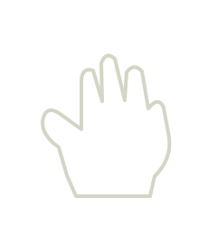
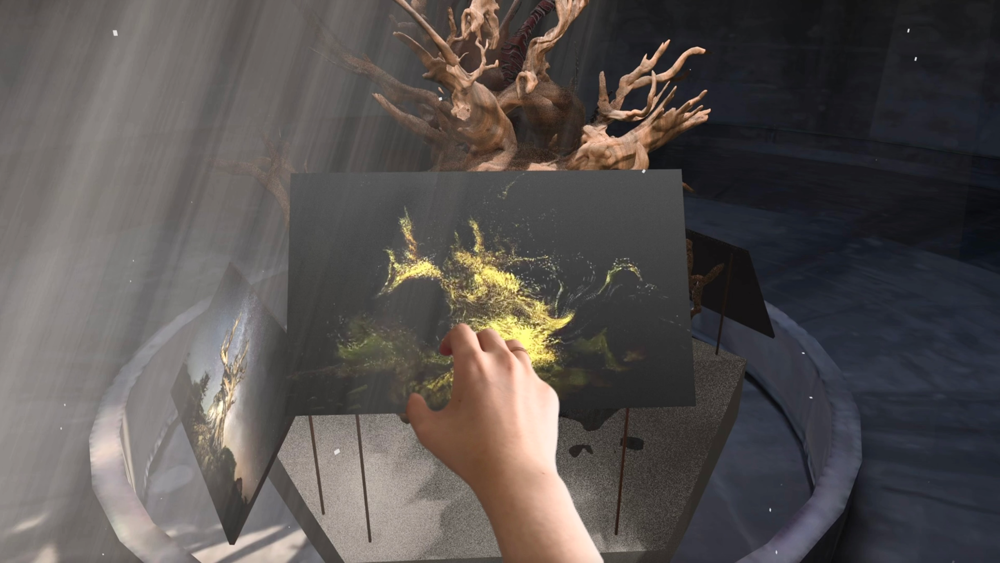
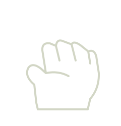
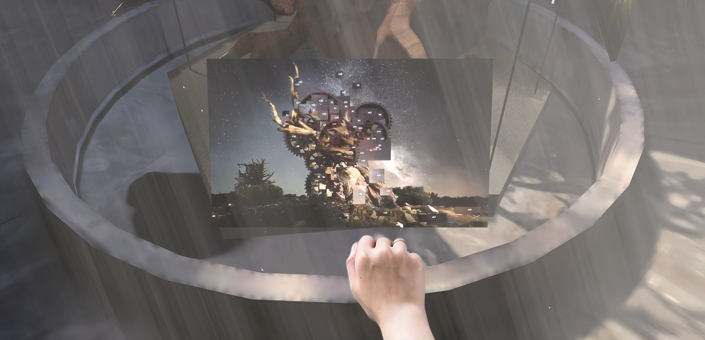
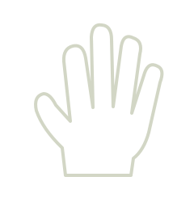
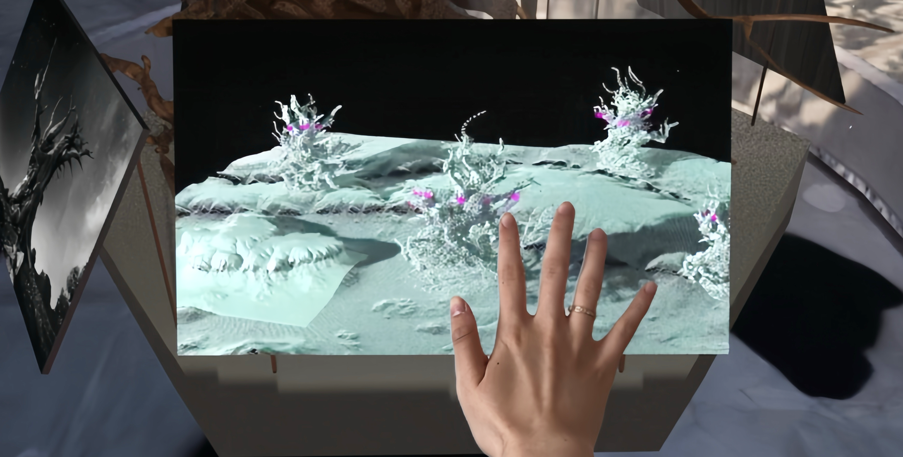
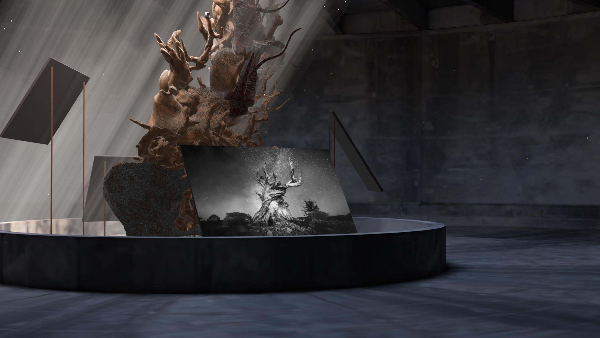
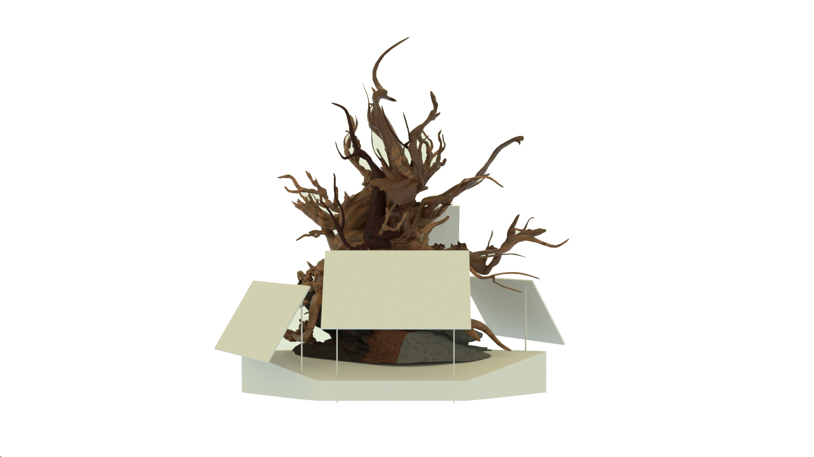

01 / Agricultural society
Half-clenched hand
The half-clenched hand suggests holding and cultivating. The golden tree reflects both dependence on nature and a wish to shape it.

06 / Re-Natured Nature / Individual project / 2025
We shape nature by growing it, building with it and turning it into information. In this project, three hand gestures change the same tree in real time, making each relationship something visitors can see and control.
I built the gesture recognition and live image switching in TouchDesigner. The installation renders show how the screens and tree could sit together in a physical space.
01 / Gesture interactions
Each gesture changes the tree and suggests a different way of treating nature.

The half-clenched hand suggests holding and cultivating. The golden tree reflects both dependence on nature and a wish to shape it.


A clenched fist suggests force and control. The tree takes on mechanical forms, connecting the gesture to industry and extraction.


An open palm turns the tree into a digital landscape, suggesting nature read through data, models and pixels.

The drawings show the hand positions; the images show their corresponding states from the Figma project.
02 / Background & research
I began with West Lake in Hangzhou. People often think of it as natural beauty, yet its landscape has been shaped and maintained for centuries. I wanted to explore what we call “natural.”
I observed West Lake and spoke with people about it. Some described it as artificial or standardized; others valued its history and the memories they associated with it.
In another interview exercise, people first saw a diamond image, then learned it was artificial. The conversation explored whether that information changed how they valued it.
Both exercises led to the same question: how much does what we know about nature change how we see it?
03 / Interaction concept
I used one tree for all three states so the changes could be compared. The half-clenched hand suggests cultivation, the fist suggests industrial control, and the open palm suggests reading nature as information. The circular layout brings them together.
04 / Project video
The video shows the three gestures and the changes in the tree. It also moves around the proposed installation.
05 / Installation design


The tree sits in the center, with screens around it. The proposed build uses a concealed camera, steel screen supports and a painted gypsum base.
Proposed installation dimensions and materials.
06 / Technical exploration
Camera recognition and switching between all three states worked in TouchDesigner. The rendered space shows the proposed installation; it is separate from the working gesture prototype.
Original project documentation ↗